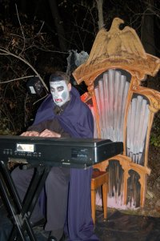

The Haunted Maze
Back for another year, every night, the Sunny Acres Corn Maze becomes the Sunny Acres Haunted Maze. This season's maze begins with an encounter with an evil organist (played by the Council Bluff Choir's own Glenn Frye). Explore the maze and find the zombie graveyard, the pumpkin tower, and a haunted house made of corn, not to mention the spiders, ghosts, witches, and other assorted villainy that inhabit the maze.
The Haunted Maze is open the last three weekends of October with a special event on Halloween. Come early in the day to explore the larger Corn Maze, stay for a homemade meal of brats and burgers, soda, and chips, and then participate in the Halloween Festival. Special stations will be set up in the Haunted Maze for trick-or-treaters. A smaller maze is also available that is "scare-friendly" for younger children.
Hours
- Open 5 pm - 9 pm on October 14, 15, 21, 22, 28, and 29
- Halloween Festival October 31 from 3 pm - 9 pm
Admission
- Age 12 and over: $8.50
- Age 6 - 11: $6.50
- Age Under 6: $2.50